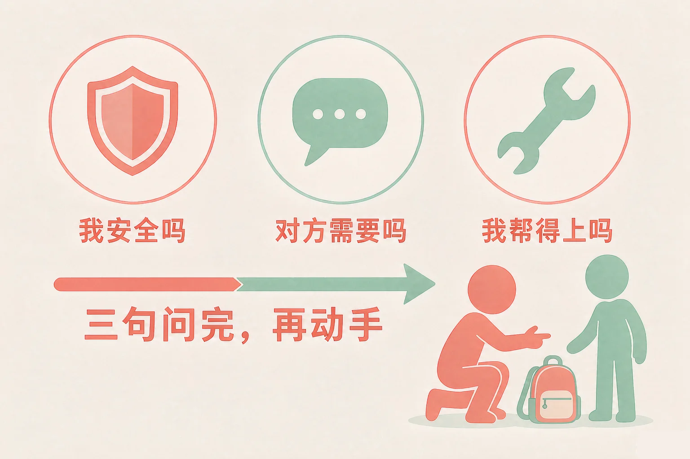
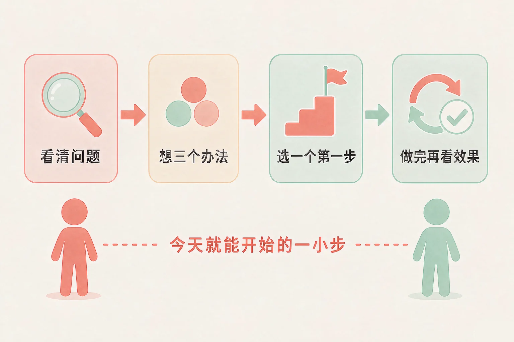
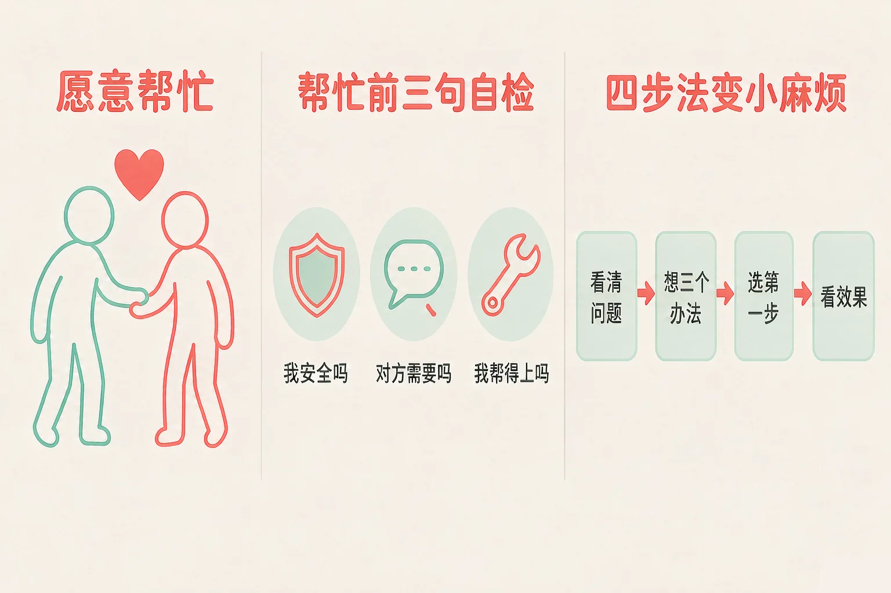

Gallery
v1.0.0 · skill v7.22.0
小学六年级 · 生活适应
走廊上有人摔了、图书角的书乱成一堆、新同学一个人站在墙边——想帮忙，又怕帮倒忙，第一步到底该做什么？

选一个你真正想知道的问题，后面的活动都会围着它转。
选择或输入后，这节课会围绕你的问题展开。
先凭直觉选一个，选完立刻看到解释——错了也没关系，正好知道要重点听哪里。
1. 走廊上有人摔了一跤，你正好路过。下面哪个做法更合适？
先判断，再动手，帮得稳；帮不上也不等于不热心，叫老师也是一种帮忙。错因提醒：常见错误是把「快」当成「好」——帮忙之前多花五秒钟看一眼，往往能少一次帮倒忙。
2. 下面哪一条属于「帮倒忙」？
帮忙的前提是尊重原来的秩序，也要问一句对方需不需要。错因提醒：最容易搞混的是「热心」和「替别人做主」——不问一句就动手，很多时候是给自己省事，不是给别人帮忙。
3. 一件小麻烦缠成一团，你不知道从哪儿下手。下面哪个做法更合适？
把麻烦变小，靠的是四步：看清、想三个、选一个第一步、做完再看效果。错因提醒：有人误认为「要一次全部解决才算解决」——一口气做完往往第二天就停下来了，一个小步骤反而能接着往前走。
为什么要学这一课？
我们已经练过遇到挫折先分清能改变的和不能改变的，也知道了身体和边界都属于自己（And）；可是看到别人遇到麻烦时，心里常常卡在两种反应上——冲上去怕帮倒忙，走开又过意不去（But）；所以这节课先练三句话，让热心帮到点子上（Therefore）。
看到别人有麻烦，愿意动一下，这个念头就是亲社会行为的开始。可是光有心还不够，动手之前先问三句。
① 我安全吗
不站在车来车往的地方，不逞能去做危险的动作。先把自己安顿好，才有余力帮别人。
② 对方需要吗
先问一句「需要我帮忙吗」。有时候对方只是想先缓一缓，问一句比直接上手更贴心。
③ 我帮得上吗
帮不上就去找能帮上的人：叫老师、请保安叔叔、喊家里人——这也是帮忙的一部分。

有的同学误认为「没帮上，就是不够热心」。这里最容易搞混的是「帮不上」和「不用帮」——真的帮不上，还可以去叫能帮上的人。把老师请来、把大人叫来，麻烦解决得可能比你自己上手更快。
🔍 深层理解 换个角度再看一遍这件事，看看能不能说出背后的原理。
看见它：把一次帮忙拆成两段：动手之前先看五秒，动手之后再看一眼结果。两段加起来，才是完整的帮忙。
比较它：「我帮你」和「我帮你，可以吗」只差三个字，一个替别人做主，另一个把选择留给对方。
迁移它：同一套三句话，在小区里、在车上、在陌生的地方都用得上：先看自己安不安全，再问一句，再决定做什么。
四个真实的小情境，每个情境里有三种做法。先点开一个情境，再从三种做法里选一个。选得不太合适也不会说你错，我会告诉你这样可能会发生什么，还可以试试什么。
先点一个你自己也遇到过的情境。
写一条你自己的：
最近你见过哪一件「有人需要帮忙」的事？写下你的三句自检：我安全吗、对方需要吗、我帮得上吗。
第二件事，是怎么把一团乱麻变成一件事。方法只有四步，一步一步往前走就行。

一个「第一步」长什么样？
它要能回答三件事：做什么、什么时候做、和谁一起。比如「今天午休的时候，我和同桌把最乱的两格书按标签放回去」——这句话今天就能开始。
有的同学误认为「第一步必须把整件事解决掉」。这里最容易搞混的是「最小的一步」和「不认真的一步」——先做一小步，是为了让事情真的动起来。不动的一整套计划，比不上已经做完的一小步。
🔍 深层理解 换个角度再看一遍这件事，看看能不能说出背后的原理。
拆开它：麻烦之所以让人发愁，是因为它被当成一整块。把它拆成看得见的小事，每一件都可能有一个今天能做的动作。
解释它：为什么先想三个办法？只有一个办法的时候，只要它行不通，人就会停在原地；三个办法里总有一个今天能开始。
迁移它：四步法不只用在班里：家里的一堆杂物、一次没准备好的小组展示、一次和同学的别扭，都可以先看清、再想三个、再选一步。
三个小麻烦，每个麻烦都配了三个第一步。点开一个麻烦，再从三个第一步里挑一个，看看它接下来会发生什么。选得不太合适也不会批评你，我会告诉你还可以试试什么。
先点一个麻烦。
写一句你自己的第一步：
说清楚三件事——做什么、什么时候做、和谁一起。写得越具体，今天越容易开始。
情境：放学后小林去图书角借书，发现书堆得像小山，管书的同学已经走了。他站在那儿想了两分钟：整理吧，怕弄乱别人的分类；不整理吧，明天大家又找不到书。请你陪他走四步。
有的同学误认为「帮忙就得一个人全包，问别人显得不够能干」。这里最容易搞混的是「自己扛」和「把事情做成」——小林先问一句，反而少了一次帮倒忙；问一句不丢人，事情做成才是目标。
说给同桌听：这四步里，哪一步你自己已经做到了？如果换成是你，你会把哪一件事定为今天的第一步？
先凭直觉选一个，选完立刻看到解释——错了也没关系，正好知道要重点听哪里。
1. 关于「帮忙前三句自检」，下面哪种理解更合适？
三句自检花不了几秒钟，却能让帮忙刚刚好。错因提醒：常见错误是把「先判断」误认为「不够热心」——判断和热心是两件事，判断让热心真正落地。
2. 下面哪一句是一个合格的「第一步」？
合格的第一步能回答三件事：做什么、什么时候做、和谁一起。错因提醒：最容易搞混的是「决心」和「做法」——决心说的是心情，做法说的是动作。
3. 你用了四步法，可是第一步做完发现没什么用。下面哪个做法更合适？
第四步本来就是「做完再看效果」，不管用是正常的，换一个办法接着走。错因提醒：有人误认为「没做成就是白做了」——你已经看清了哪条路不通，这一步本身就是收获。
先选一个真实的小麻烦（班级里的或小区里的），把三句自检问一遍，再挑一个「我能做的第一步」，最后生成你的行动小卡。选得不太合适也不扣分，我会告诉你还可以试试什么。
先在左边把三句自检点一遍。
先在第一步选一个麻烦。
先凭直觉选一个，选完立刻看到解释——错了也没关系，正好知道要重点听哪里。
1. 课间操场上，一个球滚到你脚边，一个低年级同学跑过来捡。下面哪个做法更合适？
先看一眼周围，再决定怎么还，是既安全又省事的做法。错因提醒：常见错误是把「马上动手」当成帮忙——用力踢回去，球可能砸到人，帮忙就成了添乱。
2. 小区里一辆自行车被风吹倒了，压在花坛边。下面哪个做法更合适？
扶得起就扶，扶不动就请人一起——三句自检在任何场合都适用。错因提醒：有人误认为「发到群里就等于做了事」——事情还倒在那里，先动手把能做的做了，再说话。
3. 两位同学因为值日的事闹别扭，谁也不说话。下面哪个做法更合适？
小别扭的关键是让两边都说得上话，替别人下判断往往会火上浇油。错因提醒：最容易搞混的是「调解」和「当裁判」——调解是让两个人自己说清楚，裁判是替他们下结论。
还想多说一句：做得好或做得不太好，都可以让身边的人知道——和同桌聊聊、跟老师说说。有人一起商量，事情通常没那么难。
给别人讲一遍：请用「三句自检、四步、第一步」这几个词，说清楚你最近见过的一件小事，以及你会怎么开始。
再动一动手：画出一张四步法的格子图，把一件班里的小麻烦填进去，第三步只写一句话——你的第一步。
三层练习，做完第一、二层就算通关；第三层留给愿意继续探索的同学。
⭐ 基础巩固（必做）
⭐⭐ 能力应用（必做）
⭐⭐⭐ 迁移挑战（选做）
左边是学它之前要先会的，右边是学会之后可以继续探索的，下面是同一领域的伙伴知识。
图谱正在加载：首次进入需下载知识索引（约 1–3 秒），加载完成后本行会自动消失。